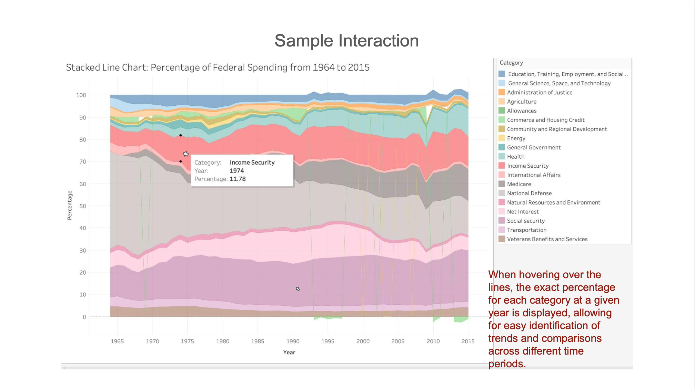
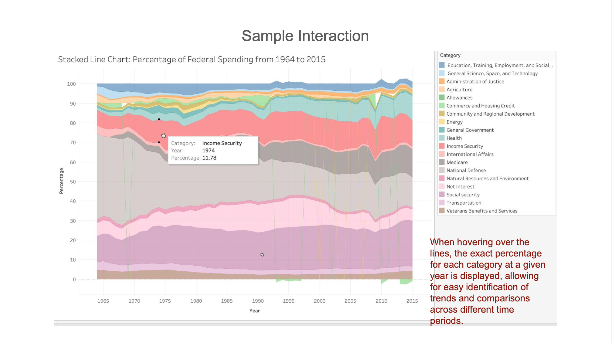

Demo Video
Embedded MP4 demo video using the HTML5 <video>
Visualization explanation
The final visualization includes two key components: a stacked area chart and an interactive category-percentage table, each designed to highlight different aspects of U.S. federal expenditure trends. The stacked area chart provides a clear visual representation of how federal spending has changed over time across key categories such as National Defense, Social Security, Healthcare, and Education. This design was chosen to make trends and proportional shifts between categories evident, helping users easily identify periods of significant growth or decline. Each category is assigned a distinct, colorblind-friendly hue, with tooltip interactions that display precise dollar values for a selected year. The category-percentage table complements the chart by breaking down federal spending into percentages for a chosen timeframe, allowing for granular comparison. This table features sorting capabilities, enabling users to rank categories by spending amounts or proportional allocation. Together, these tools provide a cohesive narrative about federal expenditure priorities, facilitating both high-level overviews and detailed analyses. The interface encourages exploration through interactivity. Users can hover and drag over the stacked area chart to examine spending for any specific years or use filters in the table to narrow down data to categories of interest. By combining interactivity with clarity, the visualizations ensure accessibility for both experts and non-experts.
A Link to walkthrough slides: View Walkthrough Slides
Data Analysis
The dataset comprises historical U.S. federal expenditure data from 1964 to 2017, detailing spending across major government functions, including Healthcare, National Defense, and Education, with amounts measured in billions of USD. This data, sourced from official budget archives published by the Obama administration, is highly reliable and was validated by cross-referencing Congressional Budget Office reports to ensure its accuracy. The dataset is organized annually, enabling analysis of how federal priorities and budget allocations have evolved over time. Preprocessing steps focused on refining the dataset for clarity and usability. First, anomalous data categories, such as "offsetting receipts" (which represent negative values or inflows to the government), were removed. These were deemed irrelevant to the analysis since they represented small portions of the budget and could distort overall spending trends. The analysis also involved selecting only the total spending values for each major category, ensuring a balance between detail and simplicity. This decision was made to avoid an overly complex table that would include too many subcategories. To facilitate comparisons over time, all nominal figures were converted into percentages of total spending for each year. This transformation helps users better assess trends and identify shifts in spending priorities without being distracted by the impact of inflation. The data includes the following types: 1. Quantitative: Expenditure values in billions or millions, providing insight into the scale of government spending. 2. Categorical: Different spending categories such as Healthcare, National Defense, and Education. 3. Quantitative (ordinal): Years, which are treated as sequential data to track changes in spending over time. By focusing on these core elements, the dataset allows for in-depth analysis of long-term trends, such as the steady increase in mandatory program spending like Social Security, as well as shifts in discretionary spending during economic crises. This well-organized dataset not only provides valuable insights into past federal spending but also serves as a reproducible foundation for future research.
Task Analysis
The task analysis focuses on four key domain tasks, each addressing a specific aspect of analyzing U.S. federal expenditure data. These tasks are structured to provide insights into spending trends, priorities, and their relationship with economic conditions. 1. Examine Expenditure Changes Over Time: The goal of this task is to track how federal expenditure in specific categories (e.g., healthcare, defense) has changed over the years. By filtering and sorting the data, the analysis identifies trends and key shifts in expenditure patterns. This task aims to uncover which categories have seen the most significant increases or decreases, providing a clear view of how government priorities evolve. The underlying process is to observe how federal spending adapts to changing needs and priorities over time. 2. Investigate Correlations Between Expenditure and Economic Performance: This task focuses on understanding how changes in federal spending in specific categories correlate with broader economic indicators such as GDP growth or unemployment rates. The goal is to assess whether increases or decreases in federal expenditure influence economic performance, providing insights into the effectiveness of spending in driving economic outcomes. This task involves filtering the data to focus on relevant years and economic factors, and then analyzing patterns to uncover potential causal relationships between federal spending and economic performance. 3. Analyze Spending Distribution in a Given Year: The objective of this task is to examine how federal spending is distributed across different categories in a specific year. By filtering and sorting the data, the analysis identifies the areas with the highest and lowest expenditures, shedding light on the government's priorities for that year. The goal is to understand the relative importance of various categories, and comparing the distribution across multiple years helps identify shifts in policy priorities. 4. Review Shifts in Spending During Significant Events: This task investigates how federal spending priorities shift in response to significant events such as financial crises or public health emergencies. By filtering the data to focus on these periods, the analysis identifies anomalies or drastic changes in spending. The goal is to understand how external events influence federal budget allocations and to compare these shifts across different events to identify patterns in governmental response to crises. Together, these tasks provide a comprehensive framework for analyzing federal spending data, helping to identify trends, correlations, and policy shifts over time.
Design Process


 



The design process for the federal expenditure visualization started with initial hand-drawn sketches, focusing on representing nominal spending data in a stacked bar chart format, alongside a table displaying each year's total spending. The goal at this stage was to provide a clear, high-level view of federal spending across multiple categories over time. However, upon reviewing the initial sketches, it became clear that simply showing nominal spending over the years didn't reveal any meaningful trends because all categories were increasing. This made it difficult to distinguish how specific categories were growing or changing over time. Upon transitioning to digital prototypes, we chose a stacked area chart to represent the data, thinking it would provide a cleaner view of expenditure trends over time. However, this approach also fell short, as the increase in all categories caused the graph to appear overly cluttered, with no distinct trends emerging. Feedback from usability testing indicated that users found it challenging to discern any significant insights from the chart. This highlighted the need for further refinement. To improve the clarity and usefulness of the visualization, we made several critical design decisions grounded in principles from design theory. First, we removed "offsetting receipts" from the dataset. These inflows, though part of the budget, were negative and did not contribute to actual government spending. Their removal helped reduce noise in the visualization and allowed the main expenditure categories to be the focus. Next, we transformed the data from nominal values to percentages. This decision was rooted in the idea of data-ink ratio, which emphasizes the importance of minimizing non-data elements to enhance clarity. By converting spending figures into percentages, we provided users with a more intuitive way to compare changes across categories over time, regardless of the overall increase in government spending. This approach aligned with the Gestalt principles of proximity and similarity, ensuring that trends could be identified based on relative proportions rather than raw numbers. Additionally, usability feedback highlighted the importance of interactivity, leading us to introduce features like tooltips and year-based filtering. These changes were designed to allow users to dive deeper into specific data points and analyze trends in a more granular way. Overall, each iteration of the design addressed specific usability concerns and refined the visualization to provide a clearer, more meaningful exploration of federal expenditure data. In conclusion, the design process was a dynamic, iterative journey guided by usability testing and design theory principles. Each modification was made with the goal of improving clarity and enhancing the user experience. The final visualization provides an accessible and informative representation of U.S. federal expenditure trends, and future improvements will continue to build on this foundation..
Conclusion
This analysis provided a comprehensive examination of federal expenditure trends, focusing on the key areas of defense, healthcare, social security, and education. By analyzing data over multiple decades, we identified notable shifts in how the federal government allocates resources and the evolving nature of these expenditures. For instance, defense spending has consistently formed a significant portion of the federal budget, but healthcare and social security spending have seen substantial increases as the population ages and healthcare costs rise. Education spending, while growing, has been more stable in comparison, highlighting a potential area for future focus. The key takeaway from this analysis is the disproportionate growth in entitlement programs like Medicare, Medicaid, and Social Security. These programs now account for a substantial portion of federal spending, reflecting demographic changes such as an aging population and the expansion of healthcare needs. While these programs provide critical support to millions of Americans, their rapid expansion poses a challenge to long-term fiscal sustainability. Additionally, the overall federal expenditure growth raises questions about the efficiency and effectiveness of spending in certain sectors. Looking ahead, future work should focus on refining the analysis by integrating policy changes and their effects on expenditure trends. For example, the impact of healthcare reforms or tax policy changes on the federal budget could offer valuable insights into the dynamics of spending and revenue generation. Furthermore, exploring the long-term fiscal impact of the increasing proportion of entitlement spending could help policymakers understand the sustainability of these programs. Additionally, it would be valuable to expand the scope to include state-level expenditure trends and how they interact with federal spending. This would provide a more holistic view of the government's financial health and guide future decisions on public policy and budgeting. By incorporating these additional analyses, the project could yield a more thorough understanding of not just where federal money is going today, but also where it is likely to go in the future, and what strategies could help manage the fiscal challenges ahead.
Acknowledgments
List here where any code, packages/libraries, text, images, designs, etc. that you leverage come from.
- D3: Data-Driven Documents by Mike Bostock.
- Pure CSS responsive "Fork me on GitHub" ribbon by Chris Heilmann.